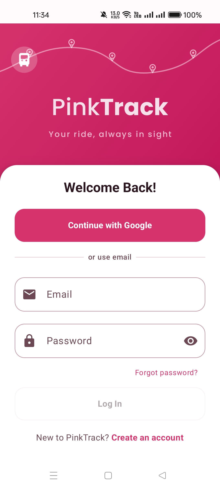
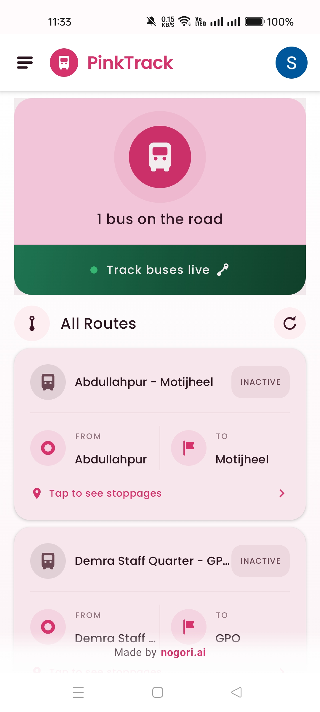
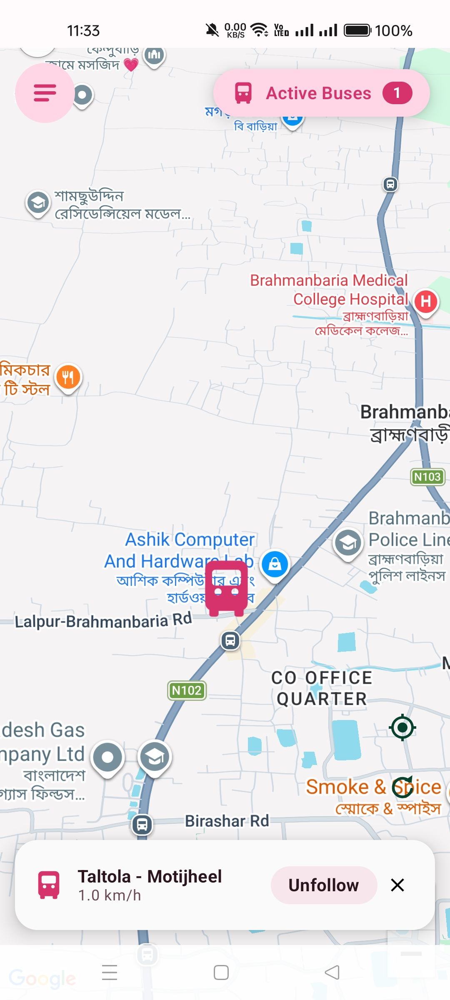
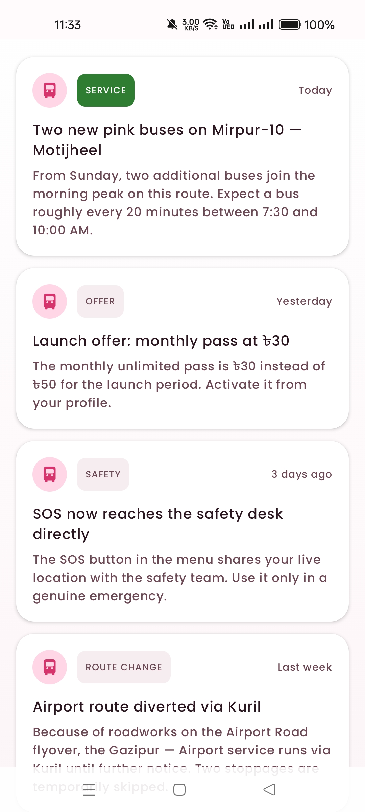
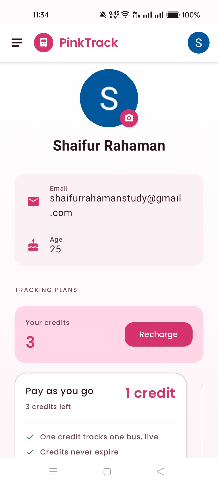
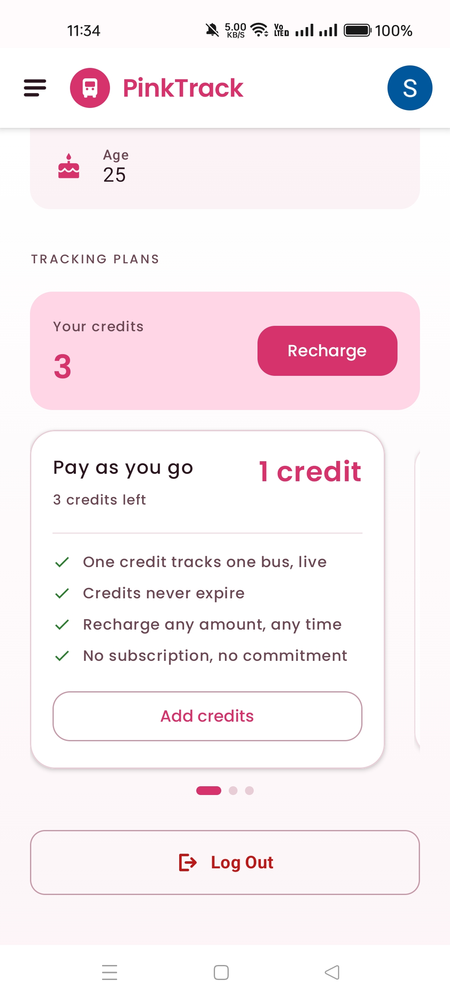
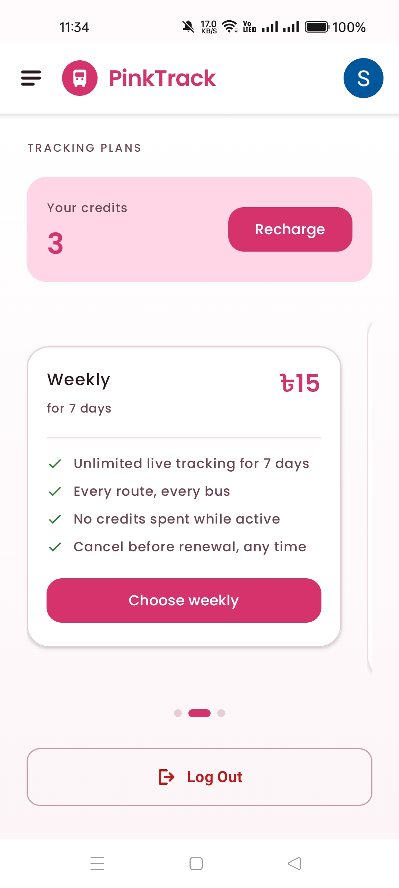

I design transit software for people who can’t afford to miss the bus.
Most of my work sits where interface design meets infrastructure that doesn’t quite work yet — sparse data, unreliable GPS, ৳15 price points, and users on ৳2,000 Android phones. Seven years of designing mobile and web interfaces, and this is one system shown end to end: the rider app, the driver app nobody sees, and the decisions that connect them.
- Experience
- 7 years, mobile & web interfaces
- Seeking
- Senior UI/UX & Product Design
- Discipline
- Interaction · Visual · Systems
- I also ship it
- Kotlin · Jetpack Compose
- Based
- Dhaka, Bangladesh · Remote-ready
PinkTrack — putting Dhaka’s women-only buses on a map
Dhaka runs a small fleet of women-only “pink buses.” There is no published timetable and no way to know whether one is coming. Riders wait at the roadside guessing — which, for the exact users the service exists to protect, is the part that costs the most.
The real problem isn’t the map
A tracking app looks like a mapping problem. It isn’t. The map is the easy half — Google gives you that. The hard half is that the data only exists if a bus driver remembers to press start and leaves their phone alone for four hours. Every design decision in this project follows from that single fact.
So I designed two apps. The one riders see, and the one that decides whether the first one has anything to show.
Constraints I designed inside
Almost no buses are live at any given moment
A handful of drivers, most of them off shift. Any design that assumes a populated map is dishonest by default. The interface has to stay useful — and stay trustworthy — when the answer is “one bus.”
Low-end Android, mixed literacy, 2G dead zones
Budget phones, aggressive battery killers that silently stop background services, and network that drops between neighbourhoods. Icon-only interfaces fail here; so does anything that needs a steady socket.
The whole product has to work at ৳15
Roughly the price of a snack. That rules out subscription-shaped pricing and the onboarding patterns built around it — no trials, no card on file, no monthly mental commitment.
The users are women choosing a safer ride
Safety context changes the tone of everything: what gets escalated, how location sharing is explained, what a notification is allowed to interrupt, and how an SOS behaves.
My role
Sole designer across both apps — product definition, flows, interaction, visual system, copy — and I built the UI in Jetpack Compose against a Firebase Realtime Database backend. Designing and implementing the same screens meant the system stayed honest: every token and component in the spec exists because it survived contact with a real build.
Designing for an empty map
Every screen below is shipped UI. The notes beside each one are the decision, not the description.

The brand mark is the product diagram
The header illustration is a route line with stop pins — the same visual grammar the map uses. The first screen teaches the metaphor before the user has anything to look at, and the tagline commits to the single promise: your ride, always in sight.
Google first, email second
One tap beats a password on a shared or borrowed phone. Email stays for riders without a Google account, but it sits below the fold of attention, behind an or use email divider rather than as an equal choice.
Log In stays disabled until the form is valid
A grey, unpressable button is a cheaper error message than a red one. Nobody gets to fail; they just aren’t finished yet.

Lead with the truth, even when it’s “1”
The hero card states the live count in plain words — 1 bus on the road — instead of hiding sparse coverage behind a map the user has to pan around to find nothing. Honesty here buys the trust that the rest of the product spends.
One green bar, one action
The only saturated non-pink element on the screen is the live-tracking bar, with a pulsing status dot. Green is reserved system-wide for something is happening right now; it never appears as decoration.
inactive is a feature, not an omission
Routes with no bus running stay in the list, clearly labelled. Riders learn the network exists and which corridors it serves, so the app is still worth opening on a bad day — and the badge sets expectations before the tap, not after.
From / To, with an origin dot and a destination flag
Route cards borrow the ticket mental model rather than the database one. And the affordance is spelled out in words — Tap to see stoppages — because a chevron alone assumes an app-literate reader.

Speed is the trust signal
The sheet reports 1.0 km/h — a bus stuck in traffic. Showing the real number, however unflattering, is what proves the dot is live rather than a last-known guess. A stale position that looks confident is the worst failure this product can have.
Follow is a state you can leave
The primary action while tracking is Unfollow, not another way in. Camera-lock is an easy thing to enter and a frustrating thing to escape, so the exit is the biggest control on the sheet, with a separate ✕ to dismiss the sheet without breaking the follow.
The bus marker is oversized on purpose
Google’s base map is dense with Bengali and English POI labels at this zoom. A standard pin loses that fight. The marker is scaled past cartographic politeness so the one thing the user came for wins the visual hierarchy against a map I don’t control.
Live count stays pinned
The Active buses 1 pill persists over the map, so panning away from the bus never makes the user wonder whether it disappeared.

One feed, four categories, one priority
service is the only filled badge in the set. Schedule changes are the thing a rider standing at a bus stop actually needs; offers and general notes are outlined and recede. Priority is encoded in weight, so it survives a fast scroll.
Relative dates, because absolute ones do no work
Today · Yesterday · 3 days ago · Last week. Nobody needs to know a notice was posted on the 14th; they need to know whether it still applies to this morning’s commute.
Safety copy says what it does and what it costs
The SOS notice explains that the button shares live location with the safety team — and adds the constraint, use it only in a genuine emergency, in the same breath. In a safety feature, the limits are part of the feature.

Balance before plans
The first thing on the money half of the screen is Your credits: 3 with Recharge beside it. The question a returning user has is “can I track a bus right now,” not “which tier am I on.” Plans sit below the answer.
Identity stays thin
Email and age, nothing more. For a women’s safety service, every additional profile field is a liability to justify, not a default to collect.


Designing pricing for a ৳15 decision
The plan carousel presents one card at a time rather than a side-by-side comparison table. At this price the choice isn’t an analysis — it’s a mood. Swipe, read four lines, commit. A pricing grid would import enterprise-SaaS ceremony into a snack-money transaction.
Credits, because everyone here already has a mental model for top-up
Prepaid mobile balance is the dominant money metaphor in Bangladesh. Building on it means no explanation is needed, and it sidesteps the real barrier: recurring card billing is not something most of these users have or want.
The benefit lists answer objections, not features
Credits never expire. No subscription, no commitment. Cancel before renewal, any time. Three of the four bullets on each card exist to defuse a specific fear about being charged. In low-trust payment contexts, that’s the conversion work.
Asymmetric button weight
Pay-as-you-go gets an outlined Add credits; Weekly gets a filled Choose weekly. The recommendation is made with emphasis rather than with a “Most popular” sticker the product hasn’t earned the data to claim.
Seven screens to make one dot appear
A rider’s entire experience depends on a driver completing a flow full of Android permission dialogs, on a shift that hasn’t started yet, while passengers board. I designed it as a sequence of gates that cannot be skipped and can always be resumed.
Permissions
Background location, explained in terms of the job — not the API.
Location service
Device GPS off is the most common silent failure. Checked as its own screen.
Bus onboarding
First run only. What the app does, and what it does with the driver’s location.
Select bus ID
Which vehicle am I driving today. Remembered per session.
Ready
A deliberate armed state before broadcasting. Nothing starts by accident.
Tracking
Foreground service, persistent notification, unmistakably on.
Completed
An explicit end, so drivers stop by finishing rather than by force-quitting.
Blocking beats a banner
A dismissible warning about location permission gets dismissed, and then the bus is invisible for the whole route with nobody aware. Making permission and GPS state full-screen, unskippable steps trades a slower start for a system that fails loudly at the only moment the driver can fix it.
The app is used one-handed, mid-shift, then backgrounded
Session state is remembered so a driver kicked out at step 4 returns to step 4. Geofence and network-state receivers handle the cases the UI can’t — re-arming when the bus reaches a terminus, surviving the dead zones between neighbourhoods.
“Completed” is what keeps rider data clean
Without an explicit finish, drivers close the app by swiping it away and the last known position sits on the rider’s map looking live. The end state exists for the other app’s users.
A palette with only one loud colour
Pink is the service’s name and its safety signal, so it had to carry brand, identity and emphasis at once without turning every surface into a highlight.
Rules that made the palette survive
| Rule | Applies to | Because |
|---|---|---|
| green = live | Track bar, active dot, SERVICE badge | If green ever means “success” or “go”, it stops meaning “a bus is moving right now.” |
| one filled button | Per screen | Pink-on-pink surfaces flatten fast; a single filled control keeps the next step obvious. |
| text never on brand pink | Body copy | Plum ink on pink-25 holds contrast on cheap LCD panels where mid-pinks wash out in daylight. |
| badges are outlined | INACTIVE, OFFER, SAFETY | Leaves fill as a scarce resource, spent only on the highest-priority category. |
| labels spelled out | FROM, TO, stoppages | Mixed-literacy, bilingual users; icons carry recognition but words carry certainty. |
| ৳ always precedes | All prices | Matches how amounts are written locally — a detail that signals the product was built here. |
Components, not screens
The system is small on purpose: a status hero, a route card, a category badge, a plan card, a bottom sheet, and a list row. Seven rider screens and seven driver screens are assembled from those six, which is why two apps stayed visually identical while being built by one person alongside the design work.
Where this design is still wrong
“1 bus on the road” is honest but not actionable
It tells a rider the state of the network, not whether their bus is coming. The next version should lead with the nearest active bus on a route the rider has saved, and fall back to the fleet count only when there’s nothing personal to say.
There is no design for the empty map
Zero active buses is the most common state and currently the least designed one. It should carry the last time a bus ran on this route and a notify-me action — the moment a rider is most willing to give permission for a push is the moment they’ve been let down.
The driver flow has never been tested at 7am
I designed it against the failure modes I could reason about. What it needs is a morning at a depot watching drivers hit gate 01 with a queue forming behind them — I expect the permission copy to be the first thing that breaks.
Bengali is on the map but not in the interface
The base map renders in Bengali; the app is English-only. For a service aimed at this user group, that’s a real gap, and localisation would force a typographic revision — Bengali script needs more line height than the current scale allows.
Seven years of shipping, three habits that stuck
Find the constraint that eats the others
In PinkTrack it was driver compliance; on every project there is one fact that decides most of the interface. I look for it before I open a design tool, because a beautiful solution to the second-most-important problem is just expensive decoration.
Design the empty, stale and failed states first
The happy path is the easiest 20% and the least-used. I start with what the screen looks like when the data is missing, old or wrong — it’s where trust is won, and it usually changes the happy path too.
Build it, so the system has to be real
I implement in Jetpack Compose and on the web. A design system that survives its own implementation has no tokens nobody uses and no component that only works at one width. It also means I hand engineers decisions, not homework.
Let’s talk about the hard half of your product
Seven years designing mobile and web interfaces, most recently end-to-end on PinkTrack — rider app, driver app, design system, and the Compose implementation of both. Available for senior UI/UX and product design roles, remote or in Dhaka.